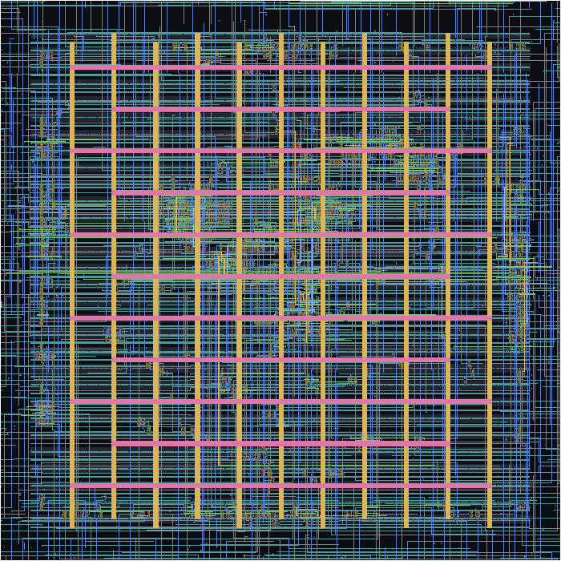

182.5 × 182.5 µm, SkyWater sky130. Final exported GDS reimported and checked: zero whole-layout Magic DRC errors; zero detailed-routing violations. This is one block, not an integrated GPU chip. LVS and timing sign-off are not complete.

Source: build/gds/xbar/xbar.gds. Check evidence: build/gds/xbar/export_audit.json.